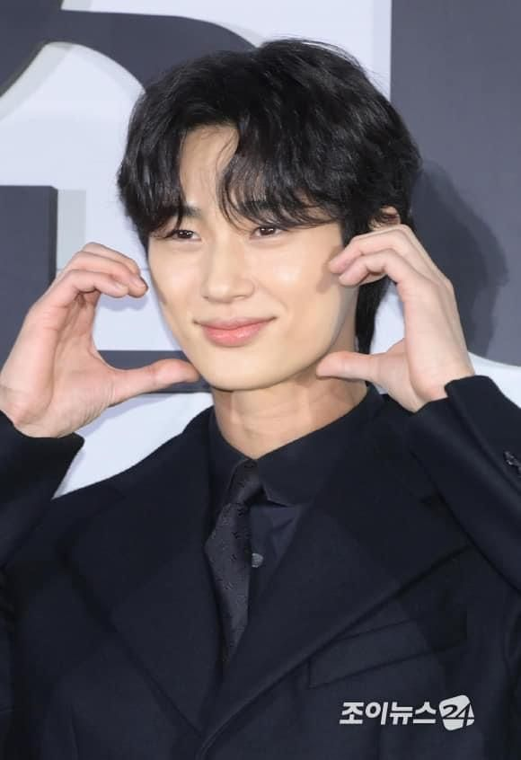

Byun Woo-Seok

Profile
Name: Byeon Woo-Seok (변우석)
Born: October 31, 1991
Nationality: South Korea
Height: 189cm
Occupation: Actor, Model
Agency: VARO Entertainment
Instagram: @byeonwooseok
Facts
- He studied at the Theater and Film Department.
- In 2013, he worked as an administrative officer at the 37th Division’s Public Information Department.
- He debuted as a model in the 2015 F/W Men’s Fashion Show.
- He debuted as an actor in the drama called "Dear My Friends" (2016)
- He was announced as an artist under VARO Entertainment on September 7, 2020.
- He started gaining popularity after starring in “Record of Youth” (2020).
- He completed his military service.
- His life motto is to ‘enjoy to the fullest.’